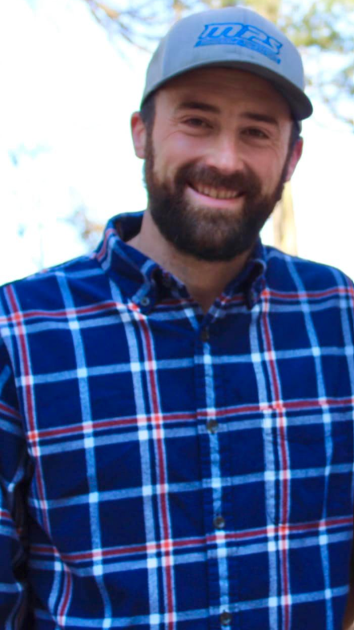

Bio

Hi, I'm Michael Klem
I'm a dedicated and passionate individual pursuing a degree in Computer Science with one year already
completed. My studies have provided me with a solid foundation in programming and computer systems, and
I'm excited to continue expanding my knowledge in this dynamic field. Before venturing into the world of
Software Engineering, I spent 10 successful years in the automotive industry. This
experience has honed my interpersonal skills and allowed me to excel in building strong relationships
with clients. I take pride in providing exceptional customer service and delivering solutions tailored
to meet their needs.
Driven by my curiosity and desire to make a positive impact, I'm constantly seeking new challenges and
opportunities to grow. I thrive in team environments, where I can collaborate, contribute ideas, and
work together to achieve project goals. I approach every task with enthusiasm, a solution-oriented
mindset, and a strong attention to detail. In my software engineering journey, I enjoy creating
intuitive and user-friendly web applications, combining my technical skills with a keen eye for design.
I believe in crafting interfaces that prioritize usability and deliver seamless experiences to users.
Balancing my career, studies, and personal pursuits, I believe in maintaining a healthy work-life
balance. In my free time, I enjoy spending time with loved ones, exploring nature, and engaging in
activities that rejuvenate the mind and spirit.
Resume
Profile
I am an enthusiastic and dedicated individual with over 10 years of professional experience. Throughout
my career, I have successfully reached goals and built strong, lasting relationships. I am
detail-oriented and a self-starter, recognized for my skills in product knowledge, relationship
building, and mentoring colleagues.
Production Technician, CNH Reman - Aug 2022-Present
Disassemble/Assemble parts using core/reman and new materials
Clean and inspect usable parts
Take materials from pre-made kits to assemble product
Test completed units to ensure they meet required specifications
Achieve and maintain production goals and complete assembly in time allotted per standard hours for each
part
Sales Consultant, Marionville Powersports – June 2020-Aug 2022
Assist customers with vehicle selection, promoting model options and features while building strong
rapport.
Maintain up-to-date knowledge of vehicles, accessories, financing, options, incentives, and promotions.
Negotiate, close, and write sales agreements, offering value-added products and services.
Complete quotes and transaction paperwork, ensuring accurate and efficient processes.
Maintain strong follow-up to ensure repeat and referral business.
Utilize customer relations management system and personal prospect development system.
Sales Consultant, Mayse Automotive Group – March 2019-March 2020
Assisted customers with vehicle selection, showcasing model options and features while establishing
strong relationships.
Stayed updated on vehicles, accessories, financing, options, incentives, and promotions.
Conducted negotiations, closed sales agreements, and facilitated smooth transactions.
Added value with additional products and services.
Prepared quotes and completed necessary paperwork.
Maintained proactive follow-up for customer satisfaction and future business.
Utilized customer relations management system and personal prospect development system.
Purchasing Agent, America’s Car-Mart - February 2018-February 2019
Located and identified used vehicles for sale, negotiating purchases with vendors.
Visited Car-Mart dealerships to discuss purchasing needs with General Managers.
Developed new sources of vehicles to expand inventory.
Conducted inspections and completed paperwork for incoming vehicle purchases.
Ensured accurate records, payments, and titles for purchased vehicles.
Communicated with the Corporate Office and adhered to corporate purchasing guidelines.
Kirksville Motor Company (Formerly Jim Robertson’s Inc.) - May 2013-February 2018
Assisted customers with vehicle selection, highlighting model options and features while building strong
rapport.
Maintained up-to-date knowledge of vehicles, accessories, financing, options, incentives, and
promotions.
Conducted negotiations, closed sales agreements, and facilitated smooth transactions.
Offered value-added products and services to enhance customer satisfaction.
Prepared quotes and completed transaction paperwork.
Maintained regular follow-up for repeat and referral business.
Utilized customer relations management system and personal prospect development system.
Education
- Kirksville High School — 2005-2009
- Ozark Technical Community College — 2022-Present